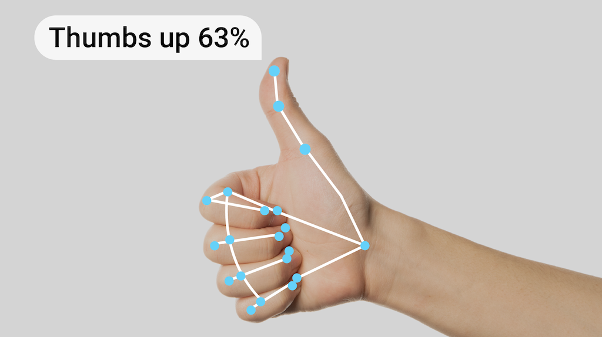

Curieuse et passionnée par les données, j’adore explorer, analyser et créer des modèles intelligents.
Mon objectif ? Développer des solutions innovantes grâce à l’IA et au machine learning.
Sur ce portfolio, vous trouverez mes projets et expériences qui illustrent mon parcours dans la data science.


Ce projet utilise le machine learning pour détecter les logiciels malveillants (malwares) en analysant leurs caractéristiques et comportements. L’objectif est d’identifier automatiquement les menaces et de renforcer la cybersécurité. 🚀.
Ce projet se base également sur le machine learning pour évaluer l’éligibilité d’un client à un prêt bancaire en analysant ses données financières et personnelles, visant à automatiser et optimiser la prise de décision des banques. 💰📊
Étude des ventes afin d’identifier les tendances et prédire la demande future. L’objectif est d’aider les entreprises à optimiser leur stratégie commerciale et leur gestion des stocks. 📈📊

Ce projet sur la reconnaissance des mains en temps réel utilise le deep learning pour contrôler le volume et la luminosité via des gestes. L'application détecte des actions telles que le balayage pour défilier et la fermeture de la main pour mettre en pause, offrant une expérience intuitive et sans contact. ✋📱